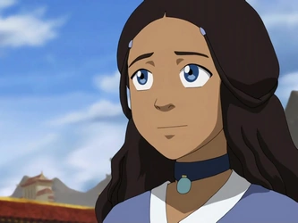
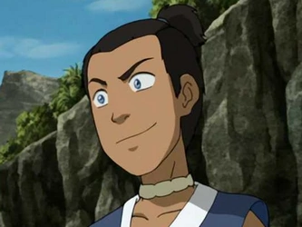
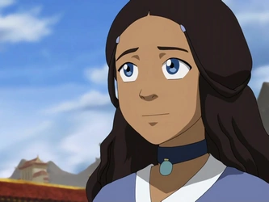
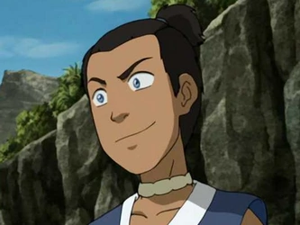
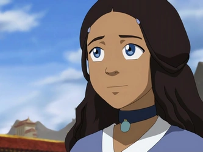
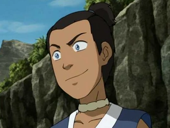
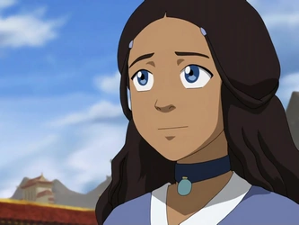
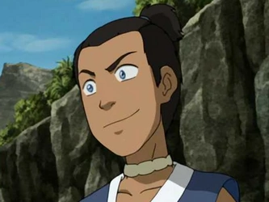

Principales
 




 



Aang, Es el protagonista de Avatar: La Leyenda de Aang.Es un Nómada Aire nacido en el 12 del AG y el Avatar durante el conflicto de un siglo de duración conocido como la Guerra de los Cien Años.
Katara es un personaje principal de Avatar: La Leyenda de Aang. Es una maestra agua, nacida y criada en la Tribu Agua del Sur por su abuela, Kanna, junto a su hermano mayor Sokka. Es la hija menor del Jefe Hakoda y Kya. Katara junto a Sokka, encontró a al Avatar Aang encerrado en un iceberg por más de 100 años. Después de entablar una amistad con él, Katara y su hermano acompañaron a Aang en su búsqueda de controlar los Cuatro Elementos.
Sokka era un guerrero adolescente de la Tribu Agua del Sur y el hijo del Jefe Hakoda y Kya. Tras la muerte de su madre y después de que su padre se marchara junto con todos los demás hombres adultos de su tribu para luchar en la Guerra de los Cien Años, Sokka fue criado por su abuela, Kanna, junto a su hermana menor Katara.
Toph Beifong es un personaje principal de Avatar: La Leyenda de Aang que hizo su primera aparición en el Libro Dos: Tierra (土). Toph es una maestra de la Tierra Control y una de las más poderosas de su tiempo. Ciega de nacimiento, Toph fue tratada con condescendencia constantemente a causa de su discapacidad y estatura, en especial por sus padres sobreprotectores. Al descubrir a los tejones topo, animales capaces de hacer Tierra Control que también eran ciegos, aprendió a usar la Tierra Control como una extensión de sus sentidos. Esto le dio la capacidad de "ver" a través de toda pequeña vibración que ocurriera en el suelo.
El Señor del Fuego Zuko, anteriormente con el título de Príncipe Zuko, es un personaje principal de Avatar: La Leyenda de Aang, que fue el antagonista del Libro Uno: Agua, Libro Dos: Tierra y eventualmente un aliado en Libro Tres: Fuego como miembro del Equipo Avatar. Es un Maestro del Fuego Control proveniente de la Familia Real de la Nación del Fuego, nacido como el Príncipe heredero. Su historia a menudo fue paralela a la del Avatar Aang. Inicialmente, fue el principal enemigo del Equipo Avatar, la vida de Zuko giraba en torno a tratar de capturar al Avatar perdido hace mucho tiempo para poner fin a su exilio y recuperar su honor como el Príncipe heredero de la Nación del Fuego.
La Princesa Azula es un personaje recurrente del Libro Dos: Tierra (土) y Libro Tres: Fuego (火) de la serie Avatar: La Leyenda de Aang. Es un enemigo clave del Equipo Avatar tras forjar su misión de perseguir al Avatar Aang y a su hermano desterrado en el Reino Tierra, el Príncipe Zuko; en compañía de sus dos mejores amigas y aliadas, Mai y Ty Lee. Es la Princesa de la Nación del Fuego, hija del Señor del Fuego Ozai y la Princesa Ursa, nieta de Azulon y hermana menor de el posterior Señor del Fuego Zuko, y medio-hermana de Kiyi. Es una prodigio del Fuego Control, siendo la única persona vista en poder generar llamas azules y relámpagos. Gracias a sus excelentes capacidades de estrategia, orquestó la victoria de la Nación del Fuego sobre la capital del Reino Tierra, Ba Sing Se, y detuvo la invasión en el Día del Sol Negro.
Iroh fue un general retirado de la Nación del Fuego, un anterior príncipe heredero de su nación, Gran Loto de la Orden del Loto Blanco, un Maestro Fuego, y un sabio mentor para su sobrino Zuko. Él era el primogénito del Señor del Fuego Azulon e Ilah, y el hermano mayor de Ozai. La bien conocida habilidad de Iroh de respirar fuego, y sus afirmaciones de "matar" al último dragón, le valieron el título honorífico de "El Dragón del Oeste"
El Señor del Fuego Ozai fue el gobernante tiránico de la Nación del Fuego durante los últimos años de la Guerra de los Cien Años. Fue el segundo hijo de Azulon e Ilah, el hermano menor de Iroh, el marido de Ursa, y el padre del Príncipe Zuko y la Princesa Azula. Como cada Señor del Fuego, Ozai fue un Maestro del Fuego Control, y antes del final de la Guerra, se creía que había sido uno de los Maestros Fuego más poderosos en el mundo.